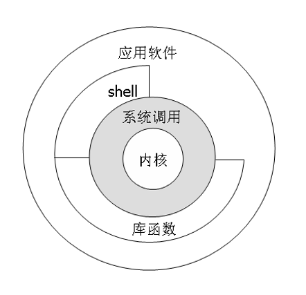
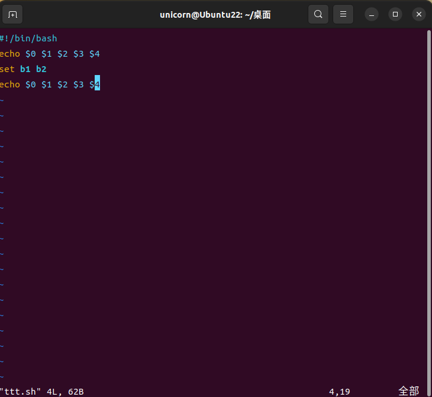
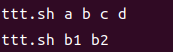
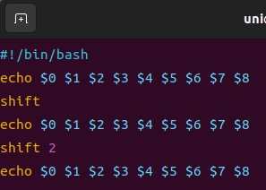
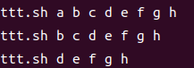
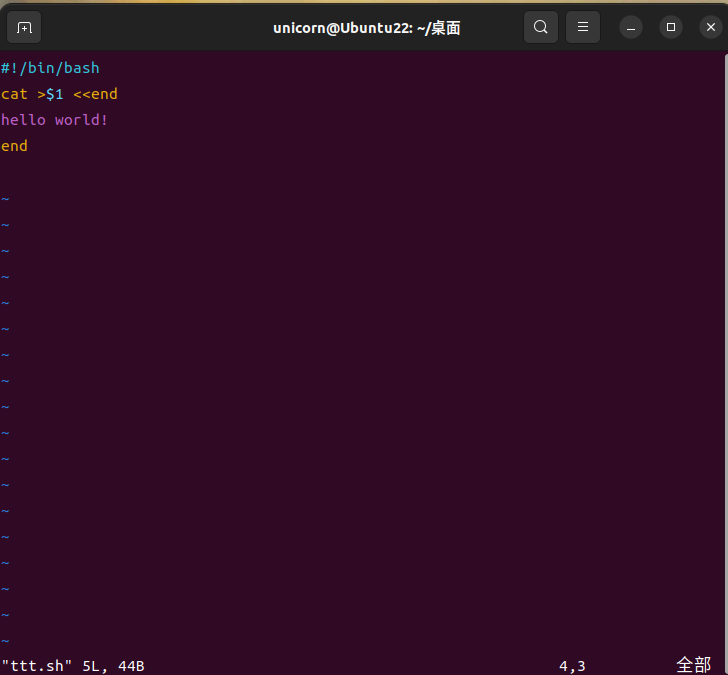

Unix 记忆留存 （二）
这是该系列第二篇。
前言
本篇博客是笔者在学习Unix课程时所积累的学习笔记。
希望对后来学习Unix的友友复习准备Unix的期末考试有帮助。
UNIX体系结构

Shell编程
意义
1.将一些有用的命令组合变成实用工具。
例如：1
2
3
4
5ls -l | sed -n '/^d/p' //显示当前目录下的子目录
vi lsdir //用vi打开lsdir
sh lsdir //执行lsdir脚本
chmod +x lsdir //为lsdir赋予执行权限
PATH=$HOME/bin:$PATH //修改路径
2.快速编写一些实用的软件
例如写一个自己的cat命令：1
2
3
4vi mycat //用vi打开mycat文件
awk '{print NR, ": ",$0}' $1 //$1 为shell命令的第1个参数
chmod +x mycat //给mycat赋予执行权限
mycat file1 //执行Mycat并传参file1，效果和cat相同
位置参数
重置
直接举例子：
脚本如下：

输出如下：

可以看出set命令重置了位置参数
参数$0是命令名，不会被重置
set会重置除$0以外的所有参数
移动
脚本如下：

输出如下:

可以看出shift是左移了参数，$0不算在内。
shell命令行结构
1 | 单个命令 |
命令行模式
1 | echo * //输出本目录所有文件名字 |
Shell元字符集
1 | //prog>file标准输出重定向 |
引号
其实在之前已经介绍的比较清楚了，这里再举几个例子加深一下印象：1
2
3
4
5
6
7echo don't do that //会认为这不是一条完整指令
echo "don't do that" //don't do that
echo "don't do that, $0" //don't do that,bash
echo "don't do that, $0, `date`" //don't do that,bash,2023年 04月 26日 星期三 23:58:21 CST
echo "don't do that, \$0, \`date\`" //don't do that, $0, `date`
echo 'don't do that, $0, `date`' //会认为这不是一条完整指令
echo 'dont do that, $0, `date`' //dont do that, $0, `date`
重定向
简介
每个程序启动时自动打开三个文件：标准输入、标准输出和标准错误输出文件，文件描述符分别为0、1、2.
>和>>将标准输出定向为一个文件，如$who > ttt
<将标准输出定向为一个文件，如$cat < ttt
1 | gcc sig.c >ttt //重定向输出 |
<<的用途
<<定义即时文件的结束符，用于在shell程序中创建文件。
举个例子：
ttt.sh脚本内容如下：

第一行表示将cat的输出重定向到$1的文件中，并且以end为结束符
第二行为一句话。
第三行出现结束符，cat命令结束运行。
输入如下命令：1
2
3sh ttt.sh ttt
cat ttt
输出：hello world!
这也说明结束符是不会被算进去的。
shell程序的结构
结构就是没有结构，就是命令列表。
命令分类
- 普通命令 who date
- 赋值命令 i=5
- 运算命令 let j=$i*4
- if命令
- case命令
- for命令
- while命令
- until命令
if命令
1 | if condition1 |
例如，判断参数个数：1
2
3
4
5
6
7
8
9if test $# -eq 5 //$#为shell内部变量，代表参数个数
then
echo there are 5 argus
elif test $# -gt 5
then
echo more than 5 argus
else
echo less than 5 argus
fi
test命令
常用于if、while、until命令中的条件判断
功能：判断文件类型或表达式是否为真
file模式
1 | test -e file //文件存在 |
expression模式
1 | test e1 //e1为真 |
string模式
test –n str //字符串str非空
test –z str //字符串str为空
case命令
1 | case word in |
例如：改一改刚才的if例子：1
2
3
4
5
6
7
8case $# in
5)
echo there are 5 argus;;
[0-4])
echo less than 5 argus;;
*)
echo more than 5 argus
esac
for命令
1 | for variable in 某个集合 //集合中元素的个数决定循环的次数 |
例如，显示所有命令行参数1
2
3
4
5for i in $*
do
echo $i
done
echo there are $# argus
特殊（bash专属）
1 | for ((e1;e2;e3)) |
这种结构几乎和C语言一模一样，除了多了一层括号。
例如，倒序显示命令行参数1
2
3
4
5
6
7
8
9
10j=0
for i in $*
do
a[j]=$i
let j=$j+1
done
for ((i=$#-1; i>=0; i--))
do
echo ${a[i]}
done
shell内部变量
$# //命令行参数个数
$* //命令行参数集合
$@ //命令行参数集合 //与$*有细微差别
$? //最后一条命令的返回值
$$ //当前shell的进程号
$! //最后一个后台命令的进程号
$HOME//用户home目录
$PATH//查询PATH 环境变量
$PS1 //定义命令行的提示符
$PS2 //命令行里较长命令的换行提示信息（符）
while命令结构
1 | while |
until
1 | until |
其他命令
break 跳出循环
continue 下一个循环
exit n 终止shell程序，n为返回值
trap 设置中断处理命令。例如：
- trap ‘rm –f tmpfile; exit 1’ 1 2 15
综合示例
1 | case $# in |
此为找到命令所在路径。
总结
shell编程的优点：充分利用现有资源，快捷
shell程序的缺点：功能有限，代码不易读，可移植性差
shell本身是一个普通用户的接口，能提供如此编程环境已经不易。
C语言开发环境
开头
这里放一些平时不太用到的，常用的就不放了。
概述
自从1973年Dennis Ritchie发明C语言并用C语言改写了UNIX系统之后，C语言就与UNIX系统紧密结合在一起，成UNIX系统的“自然”语言。
1988年，IEEE推出POSIX标准，C语言有了标准的头文件，也使得任何UNIX系统都提供C语言编程环境。
因此，对许多应用而言，C语言总是首选。
预编译指令
1 | include <stdio.h> \\告诉编译程序，在编译之前在“常见位置”寻找stdio.h，将其内容包含到程序中。 |
如何理解？
#为预编译指令，告诉编译程序其后的内容在编译之前需要处理。
include表示包含某个文件
<>表示“常见位置”，通常为/usr/include. 如果文件在其它位置，应使用“”号。如#include “myhead.h”。
stdio.h为标准输入/输出头文件，其中包含了main函数所使用的printf函数
主函数参数
int argc; char *argv[];
主函数参数是命令行的参数，argc是参数的数量，argv是各个参数所组成的数组。
良好的习惯：对于输入数据，如果给出了输入文件，则从该文件读入数据，否则从标准输入读入数据；对于输出数据，如果给出了输出文件，则输出至该文件，否则输出至标准输出文件。——这样便于使用管道来连接命令。
主函数返回值
return 0;
主函数最好声明为int类型。如果程序正常结束，主程序的返回值最好为0，否则返回-1或其它值。这样有利于shell编程。
使用echo命令可以查看最后一条命令的返回值($?)
编译
编译器
UNIX系统中默认的c编译器为cc。在Ubuntu中，cc等同于gcc。1
2
3
4
5cc hello.c //生成可执行程序 ./a.out
cc -o hello hello.c //生成可执行程序 hello
cc p1.c p2.c //源程序由两个文件组成。编译p1.c和p2.c，生成./a.out
cc -c p1.c //编译p1.c，生成目标文件p1.o，不连接。
cc -g hello.c //编译hello.c，在目标文件中加入调试信息。
调试器
gdb是GNU开源组织发布的一个UNIX下的程序调试工具。功能强大。
主要功能包括：
1）启动程序，可以按照自定义的要求运行程序。
2）可让被调试的程序在你所指定的调置的断点处停住。（断点可以是条件表达式）
3）当程序被停住时，可以检查此时你的程序中所发生的事。
4）动态的改变你程序的执行环境。
（采用命令行界面）1
2
3
4
5(gdb) //gdb 命令提示符
(gdb) help //显示gdb命令分类
(gdb) help breakpoints //显示断点设置的相关命令
(gdb) h b //同上。只要不引起歧义，gdb命令可以简写。
(gdb) he bre //同上。
工程管理器
这里指的是Makefile
简介
自动编译工程中的源文件，生成最终程序。
在大型的软件开发过程中，软件由多个人开发，源程序包含很多个文件，这些文件在不断地更改，每一次编译的过程复杂，全部重新编译或重复某些不必要的编译是一件费时的过程，因此，“自动、合理的编译”显得十分重要。
make文件
使用make命令来完成工程文件的编译，我们必须建立一个编译规则的描述文件，简称“make文件”。make文件的默认文件名为makefile、Makefile或GNUmakefile，也可以使用其它文件名。
使用默认文件名时，只需执行命令make即可完成编译；使用其它文件名时，需要执行make -f filename来完成编译。
GNUmakefile默认文件名只能由GNU make来识别，不推荐使用。
编译规则
举个例子：1
2
3
4
5
6p: p1.o p2.o //制作对象为p,依赖文件为p1.o p2.p
gcc -o p p1.o p2.o //gcc命令，生成执行文件
p1.o: p1.c //制作对象为p1.o,依赖文件为p1.c
gcc -c p1.c //gcc命令，生成.o文件
p2.o: p2.c //制作对象为p2.o,依赖文件为p2.c
gcc -c p2.c //gcc命令，生成.o文件
- 上例中包含3条规则，每条规则包含一个文件依赖关系和一条命令。p:p1.o p2.o表示文件p依赖文件p1.o和p2.o，如果这两个文件中的任何一个比文件p新（更改时间更晚），则执行规则中的命令gcc -o p p1.o p2.o。
- 所以，如果不新，就算执行这条命令也不会真正去执行gcc命令。
- 在默认情况下，make文件的第一条规则目标文件为终极目标文件。
- make根据终极目标文件中所依赖的文件逐级展开规则。
- 对于所有所依赖的文件，make依次检查后续规则中是否有生成该文件的规则。如果有，则采用该规则；
- 如果没有，则可能自动生成一条隐含规则，如p1.o:p1.c; gcc -c p1.c。如果文件不存在，又无法自动生成隐含规则，则报错。
- 当终极目标的规则被完全展开后，make将从最后一个被展开的规则处开始执行，之后处理倒数第二个规则，依次回退，最后处理终极目标所在的规则。
编写结构
1 | 目标文件：依赖文件1 依赖文件2 … |
编译过程
- 第一步：预处理。处理预处理指令，如#inlude、#define等，输出预处理后的源文件。
- 第二步：编译。词法和语法分析，如果有错误，则给出提示终止编译；如果没有错误，则将源程序翻译成汇编代码（或其它中间代码）。汇编代码是以助记符来代替机器代码的一种代码。
- 第三步：汇编。将汇编代码转换成机器代码，输出目标文件。
- 第四步：连接。连接各目标文件，生成可执行程序。
使用变量
make文件中可以使用变量，这样更为简洁，避免出错。例如：1
2
3
4objs = main.o kbd.o command.o display.o \ // \用来表示该行未结束。
insert.o search.o files.lo untils.o // n个.o文件
edit:$(objs) //制作目标为edit，依赖为一个变量的内容。
cc -o edit $(objs) //编译生成edit文件。
使用隐含规则
只有依赖关系而没有命令的规则为隐含规则.
对于隐含规则，make会自动运行相应的命令来生成目标文件。如 gcc -c -o p1.o p1.c
对于p1.o:p1.c这种自动的依赖关系，可以省略不写。
只有自动依赖关系的隐含规则可以不写。
其他是没法隐含的。
伪目标规则
伪目标规则完成某些编译以外的任务。
例如一个很常用的：1
2clear: //制作目标：clear
rm *.o //删除所有.o文件
如果伪目标文件存在，将不会执行预期的操作，因此，最好在make文件中声明伪目标规则1
标准c函数
系统调用
操作系统需要向运行程序提供各种服务，如打开文件、读写文件、分配内存、获取当前时间、执行新的程序等。访问这些服务的接口叫做“系统调用（sysem call）”，或叫做“应用程序接口（API）”、“系统服务原语”等。
UNIX每个系统调用都在c库中设置一个具有同样名字的函数。这些函数按照系统要求的技术调用相应的内核服务。例如将若干c参数送入通用寄存器，然后执行某个软中断进入内核的机器指令。
从应用的角度，系统调用可视为c函数。
库函数
库函数是在系统调用基础上所实现的公共函数。
一个库函数可能会调用一个或多个系统调用，也可能不使用任何系统调用。例如，printf函数是库函数，它调用write系统调用；strcpy复制一个字符串，不使用系统调用。
二者的关系
系统调用是操作系统内核提供的，而库函数是具体编程语言提供的。库函数构建在系统调用基础之上。
从编程的角度，编程者可编写其它函数来替换库函数，但无法替换系统调用。
系统调用通常提供某种功能的一个最小接口，而库函数通常提供比较复杂的功能。例如，系统调用write提供基本的文件写操作，而printf则提供格式化的写操作。
约定
在不需要严格区分的前提下，“标准c函数”、“库函数”指所有c语言标准头文件中定义的函数，其中包括库函数和系统调用。
UNIX和C语言标准化
ISO C
ISO C 是纯语言标准，不针对任何操作系统。
ISO C 定义了标准库函数，包含24个头文件。
c90
1989年，美国国家标准学会（ANSI American National Standards Institude）推出c语言标准，1990年被国际标准化组织（ISO）采纳，简称c90
c99
1999年，ISO修改了标准，简称c99.
IEEE POSIX
1988年，为增强应用程序在各UNIX系统之间的可移植性，IEEE推出POSIX标准。
POSIX：Portable Operating System Interface，可移植的操作系统接口。
POSIX 标准不区分库函数和系统调用，一律称之为函数。
POSIX 标准包括ISO C所定义的标准库，另外还定义了26个必须的头文件，26个扩展头文件和8个可选的头文件。
1990年该标准被ISO采纳，通常称为POSIX.1
Open Group SUS
1994年，Open Group推出单一UNIX规范（ SUS： Single UNIX Specification）。
SUS在POSIX基础上定义了一些附加接口，这些接口扩展了基本的POSIX规范的功能。相应的系统接口全集称之为X/Open系统接口（XSI: X/Open System Interface）。
XSI规定，只有遵循了POSIX.1中哪些可选的部分才能认为是遵循了XSI，并且规定：只有遵循了XSI的操作系统才能称为UNIX系统。